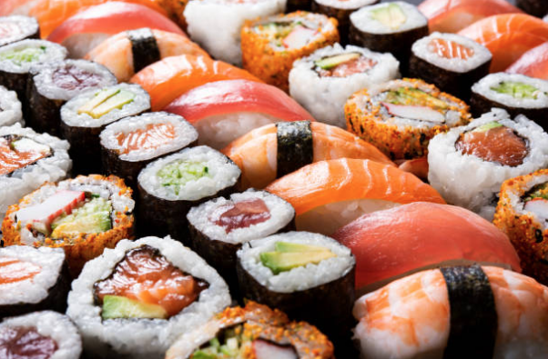
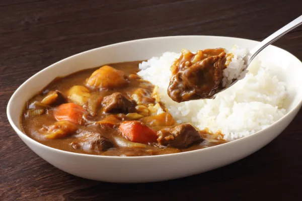
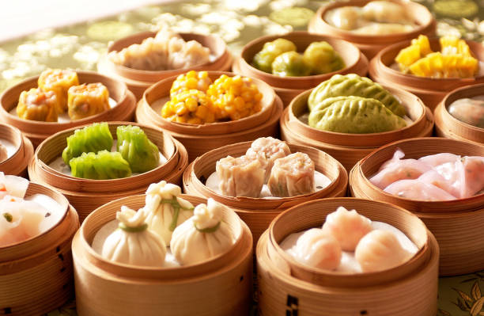

Gastronomia Asiatica
La gastronomía asiática es una maravillosa obra maestra de sabores, aromas y tradiciones culinarias que ha cautivado a paladares de todo el mundo. Este vasto continente ofrece una diversidad culinaria sin igual, con platos que varían desde picantes y exóticos hasta suaves y reconfortantes. La comida asiática es una ventana a la riqueza de las culturas que la componen, y cada plato cuenta una historia única. Desde los tentadores sabores de la comida china, con sus dumplings al vapor y pato a la pekinesa, hasta la complejidad de la gastronomía tailandesa, con su equilibrio perfecto entre dulce, picante, ácido y salado en platos como el curry de coco y la ensalada de papaya. Japón ofrece la elegancia y la precisión de la cocina japonesa, con su sushi fresco y sashimi de calidad. La India sorprende con sus currys aromáticos, el tandoori y una explosión de especias que estimulan los sentidos. En Corea, el bulgogi y el kimchi son ejemplos de una cocina vibrante y llena de sabor. Y no podemos olvidar el sabor umami de la comida japonesa, que ha llevado al sushi y al ramen a los rincones más remotos del mundo. La comida asiática no solo es deliciosa, sino que también es una expresión de las culturas y la historia de la región. Los ingredientes frescos, las técnicas culinarias cuidadosamente perfeccionadas y la atención al detalle hacen que cada comida sea una experiencia única. Ya sea que te adentres en un mercado callejero en Bangkok, te sientes en un restaurante de sushi en Tokio o cocines en casa, la comida asiática te lleva en un viaje culinario inolvidable.
Recetas
Receta #1
Receta #2
Receta #3
La comida asiática es un auténtico deleite para los sentidos, una explosión de sabores, aromas y texturas que lleva a los comensales a un viaje culinario inolvidable. La riqueza y diversidad de la gastronomía asiática es simplemente asombrosa, y cada plato es una obra de arte culinaria que encanta tanto a los paladares aventureros como a los más tradicionales. Imagina el primer bocado de sushi, donde la frescura del pescado se combina con la suavidad del arroz y la intensidad del wasabi y la salsa de soja. Siente la explosión de sabor en un plato de curry tailandés, donde el picante se equilibra con la cremosidad del coco y la fragancia de las hierbas frescas. O sumérgete en un cuenco de fideos ramen japoneses, donde los caldos ricos y los ingredientes variados se mezclan en una sinfonía de sabores.
Ingredientes: Pescado fresco: como salmón, atún, hamachi (pez limón) o camarones. Arroz de sushi: arroz glutinoso sazonado con vinagre de arroz, azúcar y sal. Alga nori: hojas de alga marina utilizadas para envolver el arroz y los ingredientes. Ingredientes adicionales: aguacate, pepino, cangrejo de imitación, huevo, etc. Wasabi: pasta verde picante. Jengibre encurtido: se sirve como guarnición y para limpiar el paladar. Salsa de soja: para mojar el sushi.
Ingredientes: Proteína: pollo, cordero, carne de res, mariscos o vegetales. Especias: mezcla de especias como comino, cilantro, cúrcuma, canela, cardamomo, clavo, entre otras. Tomates: para crear la base de la salsa. Cebolla y ajo: para dar sabor y cuerpo a la salsa. Leche de coco o yogur: para dar cremosidad y equilibrar el picante. Aceite o ghee (mantequilla clarificada): para cocinar y dar sabor. Arroz o pan naan: acompañamiento tradicional.
Ingredientes: Masa para dumplings: harina de trigo y agua. Rellenos: carne de cerdo, camarones, setas, bambú, espinacas, entre otros. Salsa de soja: para mojar los dumplings y otros platos. Salsa de ciruela: una salsa agridulce para acompañar. Hojas de bambú o papel de arroz: se utilizan para envolver algunos platos. Harina de maíz o almidón de tapioca: para hacer los dumplings y el adobo de algunos platos. Té: se sirve tradicionalmente con una variedad de tés chinos.